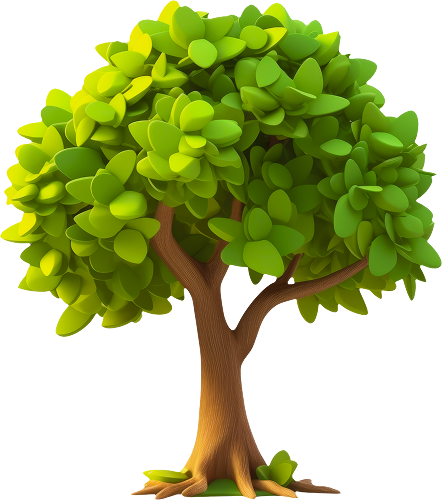

팝업

사람이 만든 숲의 시간
당신의 손끝에서 자란 이야기
-
서로배움학교 [산림써클] 4회차 - 탄소중립과 산림경영, 생명의숲 활동가 11명의 질문들
2025.10.20 윤여진사무처 이야기 서로배움학교 [산림써클] 4회차 - 탄소중립과 산림경영, 생명의숲 활동가 11명의 질문들 서로배움학교는 생명의숲 활동가의 역량 강화를 위한 스터디 그룹 프로그램입니다. ‘일 기반 학습, 일을 통한 성장’을 중심에 두고, 주최자가 선정한 주제를 바탕으로 3~5인의 공감하는 활동가들이 참여하여, 모든 구성원이 배움의 주체가 되어 경계 없이 생각을 나눕니다.
서로배움학교 [산림써클] 4회차 - 탄소중립과 산림경영, 생명의숲 활동가 11명의 질문들 서로배움학교는 생명의숲 활동가의 역량 강화를 위한 스터디 그룹 프로그램입니다. ‘일 기반 학습, 일을 통한 성장’을 중심에 두고, 주최자가 선정한 주제를 바탕으로 3~5인의 공감하는 활동가들이 참여하여, 모든 구성원이 배움의 주체가 되어 경계 없이 생각을 나눕니다. -
[종로 정원사마을] 건강한 정원문화의 씨앗: 4크4색 가드닝 크루
2025.10.15 김현정도시숲 [종로 정원사마을] 건강한 정원문화의 씨앗: 4크4색 가드닝 크루 종로 정원사마을에 어서오세요! 종로는 전통미와 현대미가 조화를 이루어 특별한 정취를 가진 공간입니다. 우리 종로 정원사마을 사업은 문화유산과 아스팔트 사이를 흙내음으로 보듬기 위해 시작되었습니다. 종로 정원사마을 가드닝 크루는 꽃과 나무를 심어 생명을 불어넣고 있습니다. 북촌, 서촌, 청진인사동, 사직동 네 구역에서 공공 정원을 돌보는 동안 서로 다른 이야기를 발견한 크루들의 행보를 소개합니다.
[종로 정원사마을] 건강한 정원문화의 씨앗: 4크4색 가드닝 크루 종로 정원사마을에 어서오세요! 종로는 전통미와 현대미가 조화를 이루어 특별한 정취를 가진 공간입니다. 우리 종로 정원사마을 사업은 문화유산과 아스팔트 사이를 흙내음으로 보듬기 위해 시작되었습니다. 종로 정원사마을 가드닝 크루는 꽃과 나무를 심어 생명을 불어넣고 있습니다. 북촌, 서촌, 청진인사동, 사직동 네 구역에서 공공 정원을 돌보는 동안 서로 다른 이야기를 발견한 크루들의 행보를 소개합니다. -
생명의숲과 함께한 2025년 유한킴벌리 대학생 그린캠프
2025.09.03 정하나공존숲 생명의숲과 함께한 2025년 유한킴벌리 대학생 그린캠프 지난 7월 28일부터 30일까지, ‘우리강산 푸르게 푸르게’ 캠페인의 일환으로 진행된 2025 유한킴벌리 그린캠프가 경상북도 안동, 울진과 강원특별자치도 동해 일대에서 열렸습니다. 올해 그린캠프는 대형 산불피해 복원 현장활동을 통해, 숲의 소중함과 회복의 의미에 대해 느끼는 시간이었습니다. 생명의숲은 산불과 기후 위기로 사라져가는 숲 생태계를 보호하고, 현장
생명의숲과 함께한 2025년 유한킴벌리 대학생 그린캠프 지난 7월 28일부터 30일까지, ‘우리강산 푸르게 푸르게’ 캠페인의 일환으로 진행된 2025 유한킴벌리 그린캠프가 경상북도 안동, 울진과 강원특별자치도 동해 일대에서 열렸습니다. 올해 그린캠프는 대형 산불피해 복원 현장활동을 통해, 숲의 소중함과 회복의 의미에 대해 느끼는 시간이었습니다. 생명의숲은 산불과 기후 위기로 사라져가는 숲 생태계를 보호하고, 현장